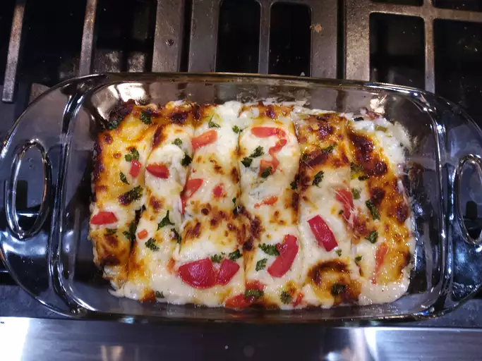

Lasagna

Description
Making lasagna can be time-consuming, but the results are well worth the wait.
You'll find a detailed ingredient list and step-by-step instructions in the recipe below,
but let's go over the basics:
Ingredients
- 2 olive oil, plus a little for the dish
- 750g lean beef mince
- 90g pack prosciutto
- 800g passata or half our basic tomato sauce
- 200ml hot beef stock
- Nutmeg
- 300g fresh lasagne sheets
- white sauce
- 125g ball mozzarella, torn into thin strips
Steps
- To make the meat sauce, heat 2 tbsp olive oil in a frying pan and cook 750g lean beef mince
in two batches for about 10 mins until browned all over.
- Finely chop 4 slices of prosciutto from a 90g pack, then stir through the meat mixture.
- Pour over 800g passata or half our basic tomato sauce recipe and 200ml hot beef stock.
Add a little grated nutmeg, then season.
- Bring up to the boil, then simmer for 30 mins until the sauce looks rich.
- Heat the oven to 180C/160C fan/gas 4 and lightly oil an ovenproof dish (about 30 x 20cm).
- Spoon one third of the meat sauce into the dish, then cover with some fresh lasagne sheets from a 300g pack.
Drizzle over roughly 130g ready-made or homemade white sauce.
- Repeat until you have three layers of pasta. Cover with the remaining 390g white sauce,
making sure you can’t see any pasta poking through.
- Scatter 125g torn mozzarella over the top.
- Arrange the rest of the prosciutto on top. Bake for 45 mins until the top is bubbling and lightly browned.